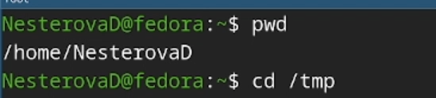
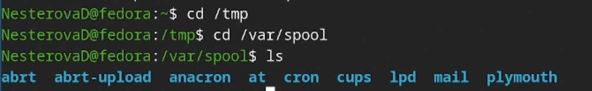
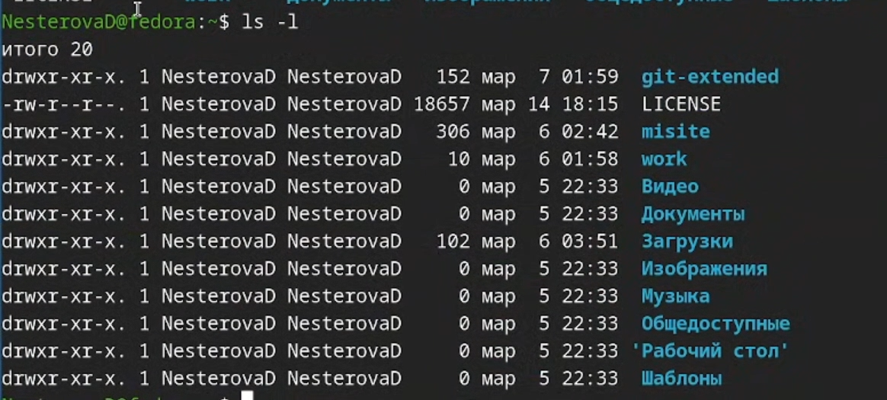
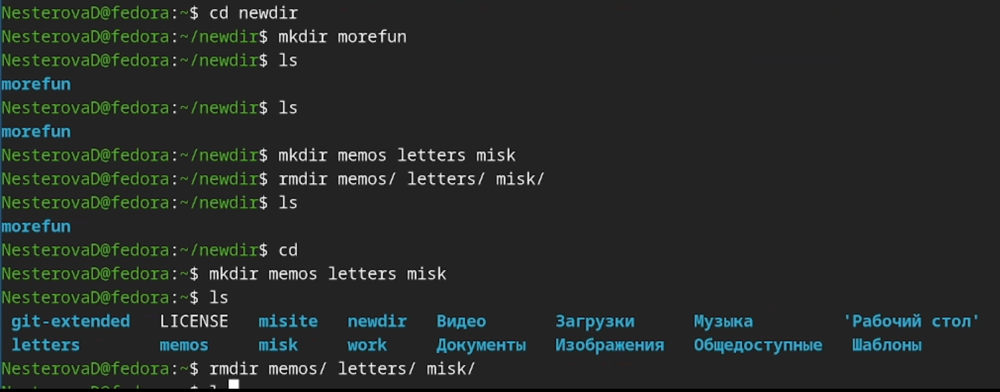
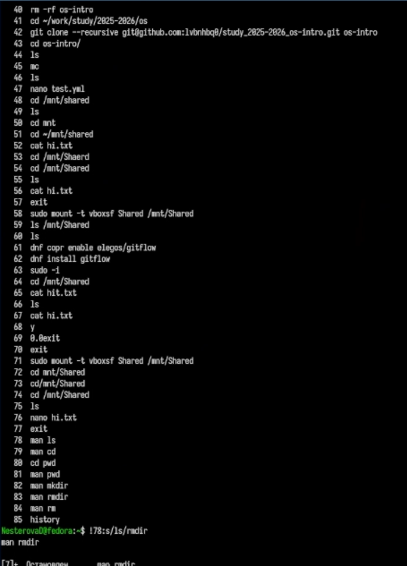

Приобретение практических навыков взаимодействия пользователя с
системой посредством командной строки.
Задание
Определите полное имя вашего домашнего каталога. Далее относительно
этого ката- лога будут выполняться последующие упражнения.
Выполните следующие действия: 2.1. Перейдите в каталог /tmp. 2.2.
Выведите на экран содержимое каталога /tmp. Для этого используйте
команду ls с различными опциями. Поясните разницу в выводимой на экран
информации. 2.3. Определите, есть ли в каталоге /var/spool подкаталог с
именем cron? 2.4. Перейдите в Ваш домашний каталог и выведите на экран
его содержимое. Опре- делите, кто является владельцем файлов и
подкаталогов?
Выполните следующие действия: 3.1. В домашнем каталоге создайте
новый каталог с именем newdir. 3.2. В каталоге ~/newdir создайте новый
каталог с именем morefun. 3.3. В домашнем каталоге создайте одной
командой три новых каталога с именами letters, memos, misk. Затем
удалите эти каталоги одной командой. 3.4. Попробуйте удалить ранее
созданный каталог ~/newdir командой rm. Проверьте, был ли каталог
удалён. 3.5. Удалите каталог ~/newdir/morefun из домашнего каталога.
Проверьте, был ли каталог удалён.
С помощью команды man определите, какую опцию команды ls нужно
использо- вать для просмотра содержимое не только указанного каталога,
но и подкаталогов, входящих в него.
С помощью команды man определите набор опций команды ls, позволяющий
отсорти- ровать по времени последнего изменения выводимый список
содержимого каталога с развёрнутым описанием файлов.
Используйте команду man для просмотра описания следующих команд: cd,
pwd, mkdir, rmdir, rm. Поясните основные опции этих команд.
Используя информацию, полученную при помощи команды history,
выполните мо- дификацию и исполнение нескольких команд из буфера
команд.
Теоретическое введение
В операционной системе типа Linux взаимодействие пользователя с
системой обычно осуществляется с помощью командной строки посредством
построчного ввода команд. При этом обычно используется командные
интерпретаторы языка shell: /bin/sh; /bin/csh; /bin/ksh. Формат команды.
Командой в операционной системе называется записанный по специальным
правилам текст (возможно с аргументами), представляющий собой указание
на выполнение какой-либо функций (или действий) в операционной
системе.Обычно первым словом идёт имя команды, остальной текст —
аргументы или опции, конкретизирующие действие. Общий формат команд
можно представить следующим образом:
<имя_команды><разделитель><аргументы>
4. Выполнение лабораторной
работы
Вывожу путь к домашнему каталогу, перехожу в каталог tmp, смотрю его
содержимое.

tmp и домашний каталог
Использую команду ls с разными флагами.
Команда ls
Проверяю, есть ли подкаталог cron в каталоге /var/spool. (итог - да,
есть)

Проверка наличия подкаталога
Проверяю права доступа в домашнем каталоге.

Права доступа
Создаю и удаляю каталоги разными способами, по заданию.

Создание и удаление
каталогов
Просматриваю описания различных команд с помощью команды man.
Описания команд
Смотрю историю команд и изменяю некоторые из них.

История команд и изменения
5. Выводы
Мы приобрели практические навыки взаимодействия пользователя с
системой посредством командной строки.